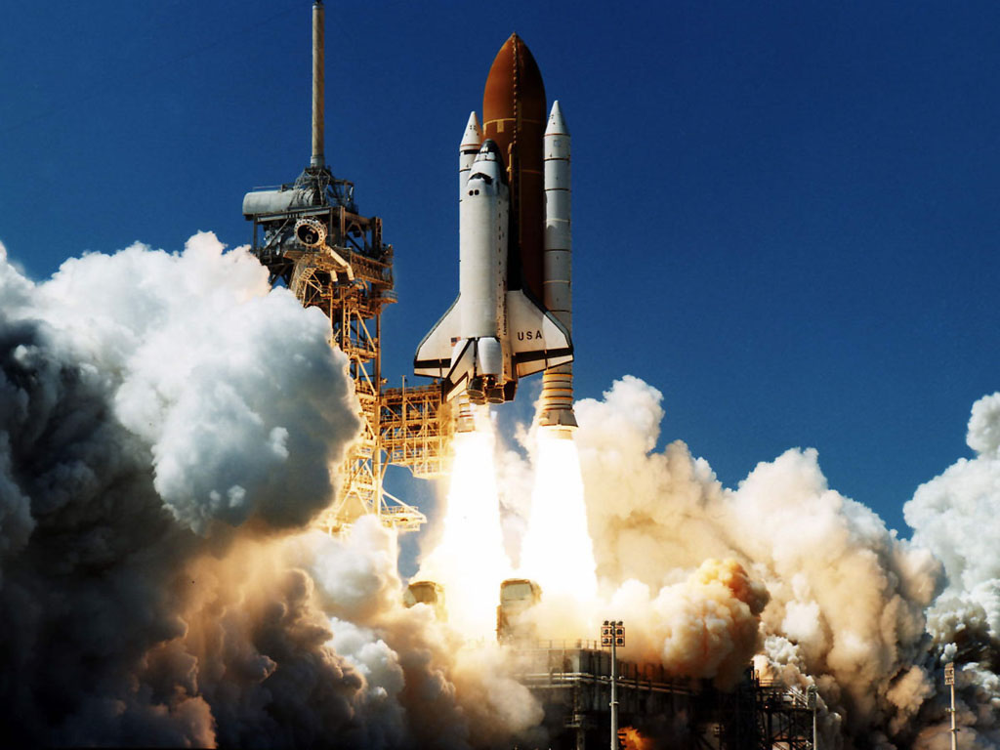

NASA launches
La carrera espacial

Cualquier tecnología suficientemente avanzada es equivalente a la magia.
- Explorer 1, primer satélite artificial de occidente (1958) El primer satélite artificial de Estados Unidos fue una respuesta a los soviéticos Sputnik I y Sputnik II, y con él se dio inicio propiamente a la carrera espacial entre los estadounidenses y los rusos. Gracias a este aparato que medía 203 cm de largo por 15.9 cm de ancho, se descubrió que la Tierra estaba rodeada de rayos cósmicos. Estuvo en el espacio 12 años y dio la vuelta a la Tierra unas 58 mil veces.
- Alan Shepard llega al espacio (1961) La historia siempre recordará que el ruso Yuri Gagarin fue el primer hombre en realizar un vuelo orbital, pero 3 semanas después, el astronauta estadounidense Alan Shepard hizo lo propio en la nave Mercury Redstone 3.
- Programa Apolo (década de los 60) Esta iniciativa fue la responsable de llevar al hombre a sobrevolar y, posteriormente, a pisar la Luna. El programa fue lanzado luego del anuncio del presidente John F. Kennedy en el que declaró que llevarían a un hombre al satélite. Fue con el Apolo 11 que esta promesa se cumplió en 1969, cuando Neil Armstrong pronunció las inmortales palabras: “Un pequeño paso para el hombre, un gran salto para la humanidad.”
- Apolo 13: el fracaso exitoso (1970) Esta misión buscaba llevar al hombre a pisar la Luna por tercera ocasión, pero una falla en el tanque de oxígeno provocó que la nave quedara en gran peligro. Gracias a la pericia del astronauta James A. Lovell y sus compañeros, así como de la genialidad de los hombres de control de misión en la Tierra, Apolo 13 pudo regresar a casa.
- Pioneer 10, nuestro gran “hola” al universo (1972) Es una sonda espacial que salió de la Tierra el 2 de marzo de 1972. Es la primera nave de exploración que cruzó el Cinturón de Asteroides y llegó hasta Júpiter. Lleva consigo una placa que le informa a cualquier inteligencia extraterrestre que pudiera encontrar de dónde vino y cómo somos los seres humanos. La última señal captada de esta sonda fue capturada en 2003; actualmente se dirige a la estrella Aldebarán, en la constelación de Tauro.
- Transbordadores espaciales (1972) Este programa nació cuando la NASA buscaba reducir costos, ya que las naves del Programa Apolo sólo podían ser utilizadas una vez. El presidente Richard Nixon quería un vehículo que pudiera soportar viajes “infinitos” al espacio, por lo que los técnicos de la NASA tuvieron que desarrollar una nave capaz de resistir el calor que la entrada y salida de la Tierra generaban. Tomó 9 años hasta que el transbordador Columbia inició su servicio de más de 2 décadas. Lamentablemente, se desintegró en su última salida y se llevó la vida de 7 tripulantes.
- Telescopio espacial Hubble (1990) Antes del Hubble, las imágenes que teníamos del espacio eran producto de los telescopios terrestres. La NASA decidió colocar uno de estos aparatos fuera del planeta para capturar fotografías más nítidas del universo. Gracias a que recibe mantenimiento periódicamente, el Hubble sigue activo.
- Misiones Mars: visitar al vecino (1997) El Planeta Rojo es, desde hace décadas, un objetivo claro para la NASA. Las misiones Mars Exploration Rover han incrementado nuestro conocimiento de Marte y han comprobado que la exploración humana podría ser posible. Los robots Spirit y Opportunity formaron parte de esta misión.
- Chandra, telescopio de rayos X (1999) Este telescopio estudia los rayos X que los ojos no pueden ver y obtiene imágenes gracias a las fluctuaciones de energía. Es más sensible que el Hubble, porque se encuentra 200 veces más arriba. Fue la carga más pesada que el transbordador Columbia puso en órbita.
- Vivir en la Estación Espacial Internacional (Presente) La NASA y otras agencias estudian qué se requiere para que el hombre resista la exploración espacial por periodos prolongados en la Estación Espacial Internacional. En una vuelta de tuerca a la carrera espacial, los rusos Sergei Krikalev y Yuri Gidzenko y el estadounidense William Shepherd fueron los primeros tripulantes.
"La danza de las estrellas a través de la noche brilla en nuestros ojos haciendo que nos perdamos en la inmensidad de lo verdaderamente profundo, haciendo que queramos capturar el momento y aprenderlo hasta el punto de poder reconocerlo la noche siguiente."
-- Ángela Cortes Hurtado